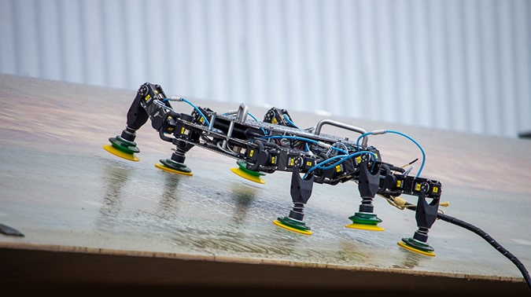
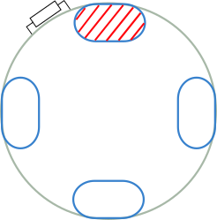

Robot localisation system on wind turbine
Analogue electronics, digital signal processing, C/C++ on STM32CUBE, MATLAB.
The purpose of this project is to locate the wind turbine inspecting robot - BladeBug - on the turbine blade.
Since the turbine blade flexes as wind blows, the straight line distance from the robot to the centre of the turbine, which is known as the hub, cannot be used as a measurement parameter.
Various methods were proposed to solve this problem, the most promising one was the solenoid ring localisation method.
As shown above is the cross-section of the blade with a ring of solenoid actuator attached to the wall. The robot, climbing on the outside of the blade, receives the sound wave signal travelled via the blade and calculates the distance based on the delay.